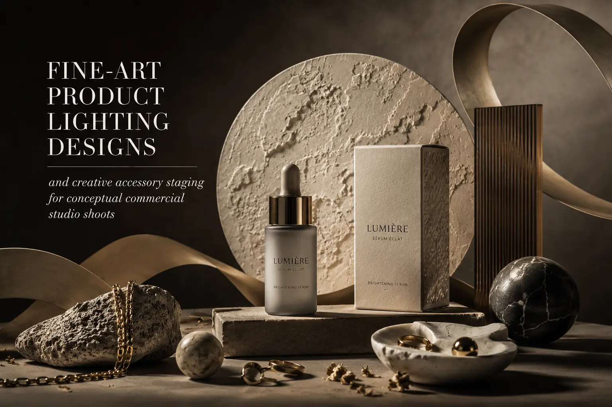
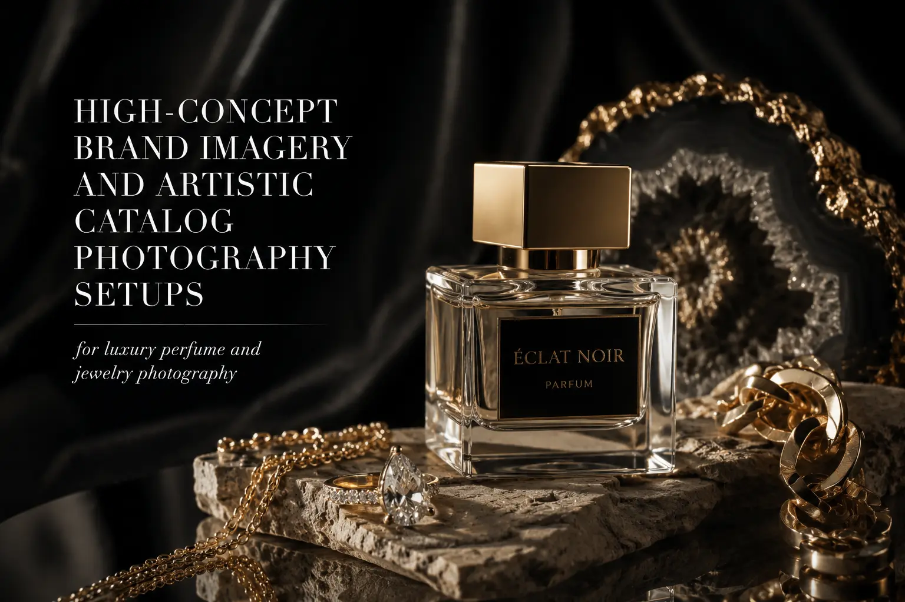

Transforming Everyday Goods into High-Art Editorial Still Life Photography
When a Soap Bar Becomes a Sculpture: The Editorial Still Life Philosophy
A bar of handmade soap, photographed on a white background with flat, even lighting, is a bar of soap. The same bar of soap, placed on a slab of raw marble, surrounded by its ingredient botanicals, lit with a single source that sculpts its surface with shadow and highlights the organic texture of its handmade form, photographed with a shallow depth of field that blurs the background into an atmosphere of muted luxury — is an object of desire. The soap has not changed. The photograph has transformed what the viewer believes it to be, what they believe it is worth, and whether they want to own it.
Editorial still life photography is the discipline of applying fine-art photographic principles — dramatic lighting, intentional composition, conceptual narrative, material juxtaposition, and emotional atmosphere — to commercial product photography. It is the production approach that transforms everyday goods from documented objects into visual experiences that communicate value, aspiration, and brand identity at a level that standard product photography cannot reach.
This is not decorative excess. This is strategic brand positioning executed through photographic craft. The editorial aesthetic communicates to the viewer that this product exists in the world of fine things — that it deserves the same attention, the same care, the same artistic investment as the most prestigious products in the market. And the viewer's perception of the product's value shifts accordingly.
Fine-Art Luxury Product Framing: Composition as Communication
Fine-art luxury product framing applies the compositional principles of classical painting and gallery photography to commercial product imagery — using the arrangement of objects, the distribution of visual weight, and the management of negative space to communicate brand values through composition alone.
- The golden ratio and classical proportions. Fine-art still life composition uses the golden ratio (1:1.618) and the rule of thirds not as rigid grid overlays but as intuitive guides for placing the product within the frame at positions that create natural visual harmony. The product placed at a golden ratio intersection point occupies a position that the eye naturally gravitates toward — creating an effortless visual hierarchy where the product commands attention without competing with supporting elements.
- Negative space as luxury signal. In editorial still life, what is absent from the frame is as important as what is present. Generous negative space — areas of the composition deliberately left empty — communicates restraint, confidence, and luxury. A product that occupies 30% of the frame surrounded by carefully managed negative space communicates premium positioning more effectively than a product crammed into every pixel. The negative space says: this product does not need to shout. It is confident enough to whisper.
- Diagonal energy and visual tension. Static, centred compositions communicate stability and reliability — appropriate for informational product documentation. Editorial compositions use diagonal lines, asymmetric balance, and intentional visual tension to create dynamic energy that holds the viewer's attention and communicates creative sophistication. A bottle placed at a slight angle, a fabric draped in a diagonal cascade, a prop arrangement that creates a visual line leading the eye through the composition — these diagonal elements transform static product shots into dynamic visual experiences.
- Layered depth and dimensional staging. Artistic catalog photography setups create compositional depth through layered staging — placing elements at multiple distances from the camera to create a sense of three-dimensional space within the two-dimensional image. Foreground elements (partially visible, often blurred) create an entry point into the image. The product occupies the focused middle ground. Background elements provide context, atmosphere, and colour without competing for attention. This layered approach produces images with the dimensional richness of physical retail displays.
Perceived Value Elevation
Editorial still life treatment consistently increases viewers' perceived value of the product — studies show that identical products photographed with editorial technique are rated 40–60% higher in perceived quality and value compared to standard product photography, directly influencing price acceptance and purchase willingness.
Brand Differentiation
In product categories saturated with identical white-background product shots, editorial still life creates immediate visual differentiation — the viewer recognises within milliseconds that this brand's visual presentation is operating at a different creative level, and the brand perception shifts accordingly.
Multi-Platform Versatility
High-art editorial images function across all brand touchpoints — website hero imagery, social media feed posts, print advertising, packaging inserts, press materials, and retail display — providing consistent premium brand communication from a single production investment.
Social Shareability
Editorial still life images earn significantly higher save and share rates on social media than standard product photography — because the artistic quality makes the image worth sharing as a visual experience rather than just a product promotion, extending organic reach beyond the brand's existing audience.

Fine-Art Product Lighting Designs: Sculpting with Light and Shadow
Fine-art product lighting designs are the technical foundation of editorial still life — the controlled manipulation of light direction, quality, intensity, and colour that transforms flat, evenly-lit product documentation into dramatic, emotionally resonant visual art.
- Single-source dramatic lighting. The most powerful editorial lighting technique is often the simplest: a single light source, precisely positioned and modified, creating strong directional light that sculpts the product's form with defined shadows and luminous highlights. Single-source lighting produces the chiaroscuro effect — the dramatic interplay of light and dark — that has defined fine art from Caravaggio to contemporary gallery photography. The product's three-dimensional form is revealed through the gradient from highlight to shadow, creating depth and tactile quality that flat lighting cannot achieve.
- Controlled shadow as compositional element. In standard product photography, shadows are problems to be eliminated. In editorial still life, shadows are compositional elements to be shaped, directed, and featured. The shadow cast by a perfume bottle becomes a design element in the composition — its shape, its density, its edge quality all contributing to the image's visual character. Luxury perfume and jewelry photography frequently uses the product's own shadow as a primary visual element, creating compositions where light and darkness share equal compositional importance.
- Texture revelation through raking light. Light positioned at a shallow angle to the product's surface — raking light — reveals surface texture with extraordinary detail, creating a visual tactility that flat lighting suppresses. The grain of handmade paper, the facets of a cut gemstone, the organic texture of natural soap, the woven pattern of fabric — all become visible and touchable through raking light that catches every surface variation and casts micro-shadows that the eye interprets as texture.
- Colour temperature as mood instrument. Lighting colour temperature — the warmth or coolness of the light — creates the foundational mood of the image. Warm light (2700K–3500K) creates intimacy, comfort, and luxury. Cool light (5500K–7000K) creates precision, modernity, and clinical cleanliness. Mixed colour temperatures — warm key light with cool fill, or warm product light against a cool background — create visual tension and sophisticated colour contrast that communicates creative intentionality.
Conceptual Commercial Studio Shoots: Building Visual Narratives
Conceptual commercial studio shoots go beyond beautiful product documentation to create images that tell stories — visual narratives that communicate brand values, product origins, usage contexts, and aspirational lifestyles through the careful construction of symbolic still life compositions.
Origin and Ingredient Narratives
- Products surrounded by their raw ingredients — coffee beans around a coffee package, botanical elements around skincare products
- Material-stage progressions showing the journey from raw material to finished product
- Geographical references through props and surfaces that evoke the product's origin (Mediterranean ceramics, Japanese textiles, Indian brass)
- Seasonal compositions that connect products to harvest times, weather, and natural cycles
Lifestyle and Usage Narratives
- Morning ritual compositions: products arranged with coffee cups, reading materials, natural morning light
- Self-care scene-setting: products within bathroom or vanity contexts with candles, towels, and botanical elements
- Entertaining and hosting: products positioned within table settings, gatherings, and social contexts
- Work and productivity: products within desk environments, creative tools, and professional settings
Abstract and Artistic Narratives
- Colour-driven compositions where the product exists within a curated monochromatic or complementary colour world
- Geometric compositions using architectural props, mirrors, and reflective surfaces for abstract visual environments
- Surreal juxtapositions that create unexpected visual relationships between products and art objects
- Textural studies that emphasise material character through extreme close-ups and macro techniques
Creative Accessory Staging: The Art of Supporting Elements
Creative accessory staging — the selection, arrangement, and styling of props, surfaces, and supporting elements around the product — is the production discipline that creates the editorial still life's visual world.
- Prop selection as brand communication. Every prop in an editorial still life composition carries cultural associations that transfer to the product through visual proximity. A vintage brass measuring spoon next to a spice jar communicates heritage and artisanal craft. A modernist geometric sculpture next to a skincare bottle communicates contemporary design sophistication. A sprig of fresh rosemary next to a candle communicates natural ingredients and sensory experience. Prop selection is not decoration — it is brand communication through visual association.
- Surface selection as positioning signal. The surface beneath the product — marble, wood, linen, concrete, metal, ceramic — communicates market positioning as immediately as the product's own packaging. Aged marble positions the product in timeless luxury. Raw concrete positions it in industrial authenticity. Hand-finished wood positions it in artisanal craft. Brushed metal positions it in modern precision. The surface is the product's visual environment, and the environment defines the product's perceived identity.
- Scale and proportion management. Supporting elements should be sized and positioned to maintain the product as the clear visual protagonist of the composition — larger props placed further from camera, smaller detail elements placed closer, and no single prop competing with the product for visual dominance. High-concept brand imagery manages scale relationships to create compositions where the product is the focal point and every other element exists in service of the product's visual narrative.
- Colour palette discipline. The colour palette of the entire composition — product, props, surface, background, lighting — should be deliberately curated to create colour harmony or intentional contrast. Monochromatic palettes (variations of a single colour family) create sophisticated visual cohesion. Complementary palettes (colours opposite on the colour wheel) create dynamic visual energy. The colour discipline should extend to every element in the frame — a random colour introduced by an unconsidered prop breaks the palette's intentionality and reduces the image's perceived creative quality.

Luxury Perfume and Jewelry Photography: The Pinnacle Application
Luxury perfume and jewelry photography represents the highest application of editorial still life technique — product categories where the physical object is relatively small, the perceived value is extremely high, and the emotional and aspirational communication of the image is the primary driver of purchase desire.
- Reflective surface mastery. Perfume bottles and jewelry are composed of highly reflective materials — glass, polished metal, gemstones — that require specialised lighting techniques to control reflections, reveal material character, and create the luminous quality that communicates precious value. Techniques include tent lighting (surrounding the product with translucent diffusion material to create soft, even reflections), strategic reflection placement (positioning light sources to create deliberate highlight patterns on reflective surfaces), and negative fill (placing black surfaces near the product to create the dark reflections that define form on highly reflective objects).
- Macro and detail capture. The craftsmanship detail of fine jewelry and the surface quality of luxury fragrance bottles are communicated through close-up and macro photography that reveals details invisible to the naked eye — the facet precision of a gemstone, the engraving detail on a metal surface, the optical clarity of fine glass, the texture of a leather-wrapped cap. These detail images communicate quality through the sheer revelation of craftsmanship at magnified scale.
- Atmospheric and environmental integration. Luxury fragrance photography, in particular, must communicate what cannot be seen — the scent itself. Editorial still life achieves this through environmental suggestion: ingredients (citrus peels, rose petals, sandalwood chips, vanilla pods) arranged around the bottle create a visual vocabulary for the invisible olfactory experience. Water droplets communicate freshness. Smoke or mist communicates warmth and mystery. Fabric and texture communicate the tactile dimension of the fragrance experience.
Building Marketing Assets from Editorial Still Life
The marketing assets produced through editorial still life photography serve the brand across every communication channel — providing the visual foundation for consistent, premium brand presentation.
- Hero images for web and retail. The strongest editorial compositions become hero images — the large-format, high-impact visuals that anchor website landing pages, e-commerce category pages, retail display graphics, and advertising materials. A single exceptional editorial still life image can serve as the brand's primary visual identity asset for an entire season or product launch.
- Social media content library. Editorial still life sessions should be planned to produce multiple compositions from each setup — full compositions, detail crops, alternative angles, and behind-the-scenes process images — building a social media content library that provides weeks of premium visual content from a single production session.
- Print and packaging applications. Editorial still life images produced at high resolution with careful colour management translate directly to print applications — catalog pages, packaging inserts, press materials, and point-of-sale displays — maintaining the visual impact of the editorial aesthetic across physical as well as digital formats.
- Campaign consistency across touchpoints. A cohesive editorial still life series — multiple images sharing the same visual language, colour palette, and compositional approach — provides campaign consistency across all brand touchpoints, ensuring that the brand's visual identity is recognisable and coherent whether the customer encounters it on Instagram, in a magazine, on the website, or in a retail environment.
Conclusion
Editorial still life photography, fine-art luxury product framing, conceptual commercial studio shoots, fine-art product lighting designs, and artistic catalog photography setups are the production disciplines that elevate everyday goods from documented objects into objects of desire — transforming commercial products into visual art that communicates value, aspiration, and brand identity at a level that standard photography cannot reach.
The commercial value is direct: products presented through editorial still life treatment are perceived as more valuable, more desirable, and more premium than identical products presented through standard photography. The image does not lie about the product — it reveals the product's best self, the version of the product that the brand intended when it designed, crafted, and positioned it for its audience.
At The PhD Ads in Madurai, we produce editorial still life photography, conceptual commercial studio shoots, luxury perfume and jewelry photography, and high-concept brand imagery for brands ready to transform their products from things to be sold into things to be desired — marketing assets that make everyday goods extraordinary.
Key Topics
Ready to Transform Your Products Into Objects of Desire?
At The PhD Ads in Madurai, we produce editorial still life photography, conceptual commercial studio shoots, and luxury product framing for brands ready to elevate their everyday goods into high-art visual experiences — marketing assets that make products extraordinary.
Email: team@e2o.in